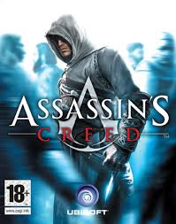
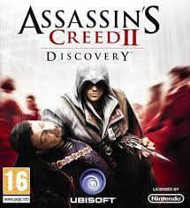
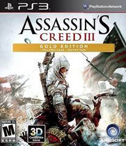
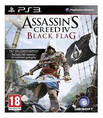
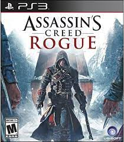
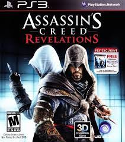

 Assassin's Creed é um jogo eletrônico de ação-aventura desenvolvido pela Ubisoft Montreal e publicado pela Ubisoft. É o primeiro título da série Assassin's Creed. O jogo foi lançado para PlayStation 3 e Xbox 360 em novembro de 2007 e foi disponibilizado no Microsoft Windows em abril de 2008.
 Assassin's Creed II é um jogo eletrônico de ação-aventura desenvolvido pela Ubisoft Montreal e publicado pela Ubisoft. Sendo a sequência de Assassin's Creed, ele foi lançado em 17 de novembro de 2009 na América do Norte[1] e em regiões PAL para iPhone OS, PlayStation 3 e Xbox 360, no dia 9 de Março de 2010 para Microsoft Windows.
 Assassin's Creed III é um jogo de ação-aventura produzido pela Ubisoft e publicado pela Ubisoft durante os meses de Outubro e Novembro de 2012 para Wii U, Xbox 360, PlayStation 3 e Microsoft Windows . É o quinto jogo principal da série Assassin's Creed e o seu terceiro título numerado. Assassin's Creed III é a continuação direta de Assassin's Creed: Revelations de 2011.
 Assassin's Creed IV: Black Flag é um videojogo de ação-aventura desenvolvido pela Ubisoft Montreal, juntamente com sete outros estúdios da Ubisoft. Black Flag é o sexto jogo principal da série Assassin's Creed e uma sequela da história moderna de Assassin's Creed III e uma analepse para a sua história ancestral. Foi editado durante os meses de Outubro e Novembro de 2013 pela Ubisoft para Microsoft Windows, PlayStation 3, PlayStation 4, Xbox One, Xbox 360 e Wii U.
 Assassin's Creed Rogue é um jogo eletrônico de ação-aventura desenvolvido pela Ubisoft Sofia e publicado pela Ubisoft.[1] É o sétimo jogo principal da série Assassin's Creed e serve como uma sequência para Assassin's Creed IV: Black Flag (2013), e tem relação com Assassin's Creed III e Assassin's Creed Unity. É o último jogo da série a ser desenvolvido para a sétima geração de consoles, sendo lançado para PlayStation 3 e Xbox 360 em novembro de 2014, e para Microsoft Windows em março de 2015.[2] A sua versão remasterizada foi lançada para PlayStation 4 e Xbox One em março de 2018.[3] Também foi lançado no Nintendo Switch como parte da The Rebel Collection juntamente com o Black Flag em dezembro de 2019.[4]
 Assassin's Creed: Revelations é um jogo eletrônico da franquia Assassin's Creed desenvolvido pela Ubisoft. Durante o jogo, os três protagonistas dos jogos anteriores da franquia serão apresentados: Altaïr, Ezio e Desmond. O jogo foi lançado para PlayStation 3 e Xbox 360 no dia 15 de Novembro de 2011. Para Microsoft Windows o jogo foi lançado no dia 2 de Dezembro de 2011.[1][2] Foi anunciado que seria o último jogo com o personagem Ezio Auditore da Firenze e o ultimo também na época do Renascimento.[1][2]